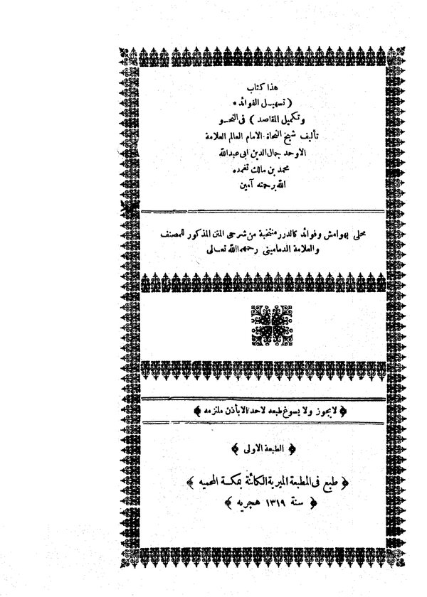
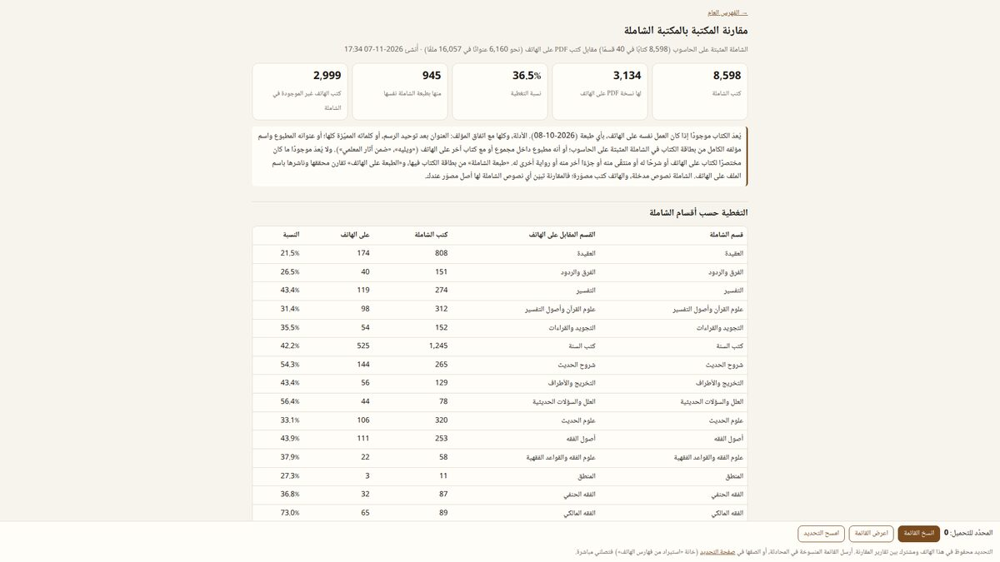
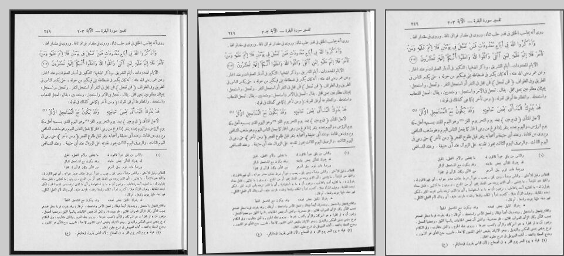
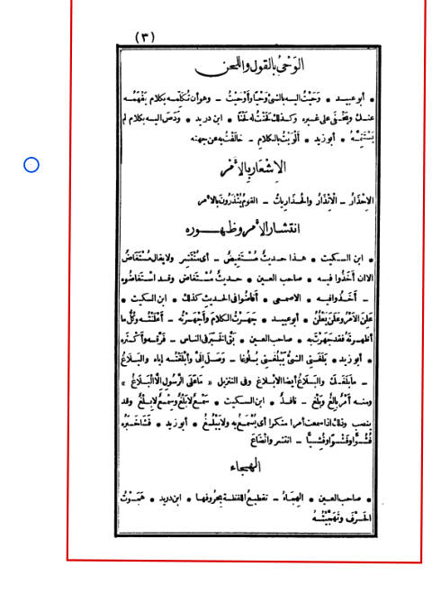
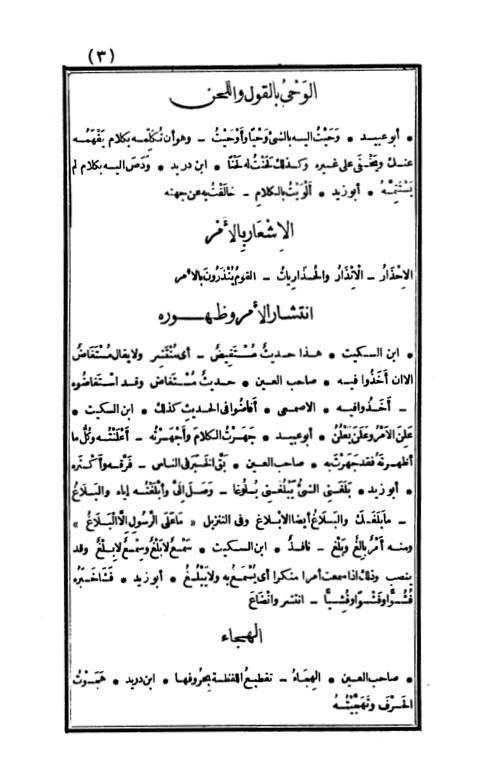
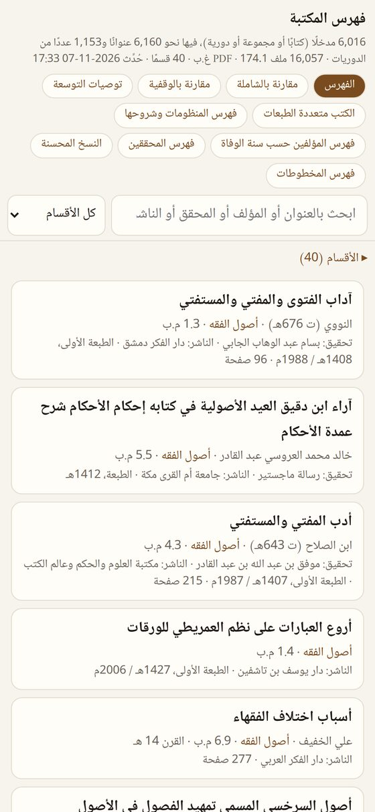
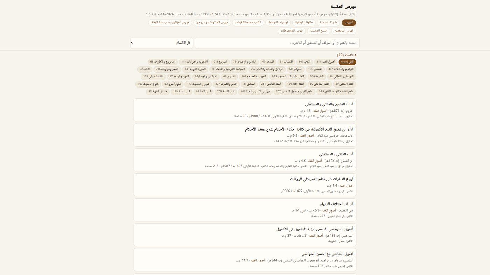

دراسة حالة · 2026
خِزانةٌ في الجيب
كيف صار هاتفٌ فيه آلاف الملفات بلا ترتيب مكتبةَ تراثٍ مسمّاة مرتّبة يُبحث فيها، من 16,757 ملفًا في أربعين قسمًا — بقواعد مكتوبة قبل البرمجة، ووكلاء ذكاء اصطناعي يعملون تحتها، ورؤية حاسوبية على حواسيب سحابية، وإنسان له الكلمة الأخيرة.
- 38يومًا
- 16,757ملفًا · 175 GB
- 97,925تغييرًا مسجَّلًا
- 474,268صفحة استقامت
Case study · 2026
A Library in a Pocketخِزانةٌ في الجيب
How a phone holding thousands of unordered files became a named, ordered, searchable heritage library of 16,757 files in forty sections — with rules written before any code, AI agents working under them, computer vision on cloud machines, and a human with the last word.
- 38days
- 16,757files · 175 GB
- 97,925logged changes
- 474,268pages set straight
1البداية: الهاتف كما وُجد
في الليلة الأولى جُرد الهاتف كما هو، قبل أن يُغيَّر فيه شيء: 9,469 ملف PDF في 29 مجلدًا، حجمها 99.3 GB، بلا نظام. عناوين مقطوعة في منتصف الكلمة، وأرقام بدل الأسماء، ولواحق لا تعني شيئًا، ومجلدات تجمع ما لا يجمعه شيء.
- 9,469ملف PDF في 29 مجلدًا
- 99.3 GBحجم المجموعة
- 392ملفًا ليست كتبًا أصلًا: صفحات ويب وملفات صوتية وغيرها
- 841نسخة زائدة من كتب موجودة
أسماء حقيقية من تلك الليلة، كما يحفظها سجلّ التغييرات:
الأول كتاب حقيقي — الجزء الثاني من «سمط اللآلي» — ولا شيء في اسمه يقول ذلك. 617 ملفًا كانت على هذا النمط.
1The starting point: the phone as it was
On the first night the phone was inventoried as it was, before anything was changed: 9,469 PDF files in 29 folders, 99.3 GB, with no system. Titles cut off mid-word, numbers instead of names, suffixes that meant nothing, and folders holding whatever belonged nowhere.
- 9,469PDF files in 29 folders
- 99.3 GBthe collection's size
- 392files that were not books at all: web pages, audio and more
- 841surplus copies of books already there
Real names from that night, as the change log keeps them:
The first is a real book — volume two of Simṭ al-laʾālī — and nothing in its name says so. 617 files followed that pattern.
2المبدأ: القواعد قبل البرمجة
لم يبدأ العلاج بالبرمجة. بدأ بثلاث جمل على ورقة:
- الاسم من الدليل، لا من التخمين.
- كل تغيير في خطة يمكن التراجع عنها.
- لا يُحذف إلا ما ثبت تكراره بايتًا بايتًا.
كيف يعمل وكيل ذكاء اصطناعي تحت القواعد
كُتبت القواعد في ملف واحد — AGENTS.md — يقرأه كل وكيل قبل أن يلمس شيئًا: أين الكتب، كيف يُتصل بالهاتف، ما يُحذف وما لا يُحذف أبدًا، وكيف يُسمّى الكتاب. وكيلان من شركتين مختلفتين يعملان تحت هذا الملف، والقواعد نفسها لكليهما. الآلة تقترح وتنفّذ؛ صاحب المكتبة يراجع ويقرّر، وتصحيحاته تُحفظ في جداول تُقرأ قبل كل تشغيل.
الخطة والسجلّ
كل تغيير يمرّ بخطة: ملف من ثلاثة أعمدة — من أين، إلى أين، لماذا — تُطبَّق بأداة واحدة، ويُتراجع عنها بالأداة نفسها. وكل ما طُبّق كُتب في سجلّ واحد يُضاف إليه ولا يُمحى منه. سطر منه، كما هو:
- الوقت
- 2026-10-25 15:25:16
- الفعل
- move
- من
- Books/التجويد والقراءات/البيان في عد آي القرآن - أبو عمرو الداني.pdf
- إلى
- Books/التجويد والقراءات/البيان في عد آي القرآن - أبو عمرو الداني - ت غانم قدوري الحمد - منشورات مركز المخطوطات والتراث والوثائق الكويت.pdf
- السبب
- title page read (book 1502, ok)
- الخطة
- 379-names-read-1432-1539
- 532خطة قابلة للتراجع
- 97,925سطرًا في السجلّ
- 151أداة صغيرة تؤدي كلٌّ منها عملًا واحدًا
- 823إيداعًا في git
ما الذي سُجّل؟
2The principle: rules before code
The cure did not start with code. It started with three sentences on a sheet of paper:
- A name comes from evidence, never from a guess.
- Every change goes in a plan that can be undone.
- Nothing is deleted unless it is proven identical, byte for byte.
How an AI agent works under the rules
The rules live in one file — AGENTS.md — that every agent reads before touching anything: where the books are, how the phone is reached, what may be deleted and what never, and how a book is named. Two agents from two different companies work under that file, with the same rules for both. The machine proposes and executes; the library's owner reviews and decides, and his corrections are kept in tables that are read before every run.
The plan and the ledger
Every change goes through a plan: a three-column file — from where, to where, why — applied by one tool and undone by the same tool. Everything applied is written to a single append-only ledger. One of its lines, as it is:
- Time
- 2026-10-25 15:25:16
- Action
- move
- From
- Books/التجويد والقراءات/البيان في عد آي القرآن - أبو عمرو الداني.pdf
- To
- Books/التجويد والقراءات/البيان في عد آي القرآن - أبو عمرو الداني - ت غانم قدوري الحمد - منشورات مركز المخطوطات والتراث والوثائق الكويت.pdf
- Reason
- title page read (book 1502, ok)
- Plan
- 379-names-read-1432-1539
- 532reversible plans
- 97,925ledger lines
- 151small tools, each doing one job
- 823git commits
What was logged
3الأسماء
قاعدة واحدة للمجلد والملف الواحد والمجلدات المتعددة، بلا أقواس ولا فواصل ولا رموز قديمة:
القراءة بالعين
الاسم يُقرأ من صفحة العنوان، لا يُنسخ من كتالوج ولا يُخمَّن من اسم الملف. الكتالوجات تُعين وتُستأنس بها — الشاملة والوقفية وأرشيف الإنترنت — لكن الدليل هو الصفحة نفسها. وكل قراءة تُسجَّل في جدول واحد: العنوان، المؤلف، المحقق، الناشر، المدينة، وملاحظة القارئ؛ ومنه يُبنى الاسم آليًا على القاعدة، ويمرّ إلى الهاتف في خطة.

رحلة كتاب واحد في السجلّ
«البيان في عد آي القرآن» لأبي عمرو الداني — من ملف بلا مؤلف ولا محقق إلى اسمه الكامل. كل خطوة في السجلّ:
- 3 أكتوبروصل من أرشيف الإنترنت، ووُضع في قسمه من أقسام الشاملة: «التجويد والقراءات».
- 10 أكتوبرأُضيف اسم المؤلف: أبو عمرو الداني.
- 13 أكتوبرقُصّت صفحاته وقُوّمت بلا فقد.
- 25 أكتوبرقُرئت صفحة عنوانه فاكتمل الاسم: المحقق غانم قدوري الحمد، والناشر مركز المخطوطات والتراث والوثائق بالكويت.
3Names
One rule for a folder, a single file and the volumes of a set, with no parentheses, commas or legacy codes:
Reading by eye
A name is read from the title page — not copied from a catalogue, not guessed from a file name. Catalogues help and are consulted — Shamela, Waqfeya, the Internet Archive — but the evidence is the page itself. Every reading goes into one table: title, author, editor, publisher, city, and the reader's note; the name is composed from it by the rule and reaches the phone through a plan.
One book's journey through the ledger
al-Bayān fī ʿadd āy al-Qurʾān by Abū ʿAmr al-Dānī — from a file with no author and no editor to its full name. Every step is in the ledger:
- 3 OctoberArrived from the Internet Archive and was placed in its Shamela section, Tajwīd and readings.
- 10 OctoberThe author's name added: Abū ʿAmr al-Dānī.
- 13 OctoberIts pages cropped and levelled, losslessly.
- 25 OctoberIts title page read, and the name completed: editor Ghānim Qaddūrī al-Ḥamad, publisher the Manuscripts, Heritage and Documents Centre, Kuwait.
4التحقق
التكرار بايتًا بايتًا
لا يُحذف ملف لأن اسمه يشبه اسم ملف آخر. التكرار يُثبَت: الحجم نفسه، ثم 64 KB متطابقة في البداية وعند الربع والنصف وثلاثة الأرباع والنهاية — ثم تلخيص كامل للملف يُحسب على الهاتف نفسه. الطبعات المختلفة تبقى كلها، والمجلد الذي يجمع عدة كتب لا يُفصل. من النسخ المتطابقة يُحتفظ بالأفضل: الكاملة، ثم ذات الصفحات السليمة، ثم الأعلى دقة، ثم ذات طبقة النصّ.
المقارنة بالمصادر
- 8,598كتابًا في الشاملة (40 قسمًا) قوبلت بها المكتبة؛ منها 3,134 على الهاتف
- 2,999كتابًا على الهاتف ليست في الشاملة
- 11,594مادة في المكتبة الوقفية قوبلت بها المكتبة
- 7,159ملفًا تُتبّع أصلها في الليلة الأولى بالحجم الدقيق في قوائم أرشيف الإنترنت
المطابقة بالطبعة لا بالعنوان وحده: المحقق والناشر وعدد المجلدات وحجم الملف بالبايت. وما لا يثبت لا يُعتمد، ويُوثَّق بعنوانه وسببه.

4Verification
Duplicates, byte for byte
No file is deleted because its name resembles another's. A duplicate is proven: the same size, then 64 KB identical at the start, at a quarter, a half, three quarters and the end — then a full checksum computed on the phone itself. Different editions all stay, and a volume holding several books is never split. Of identical copies the best is kept: complete first, then whole pages, then resolution, then a text layer.
Reconciliation with the sources
- 8,598books in Shamela (40 sections) reconciled with the library; 3,134 of them on the phone
- 2,999books on the phone that Shamela does not have
- 11,594items in al-Maktaba al-Waqfeya reconciled with the library
- 7,159files traced to their source on the first night by exact size in Internet Archive file lists
A match is made by edition, not by title alone: editor, publisher, number of volumes and the file's size in bytes. What is not proven is not used, and it is documented with its title and reason.
5الصفحات
الصفحة الممسوحة تأتي مائلة، بحواف سوداء، وبهوامش تأكل نصف الشاشة. الرؤية الحاسوبية تجد إطار النصّ في كل صفحة، وتحسب إطارًا واحدًا للكتاب كله يتمركز على كل صفحة، وتقوّم الميل — بلا فقد: الصور لا تُمسّ، والقصّ والتقويم يُكتبان في الملف كإطار وتحويل يمكن التراجع عنهما.

- 474,268صفحة تغطيها 1,124 وصفة قصّ
- 8,760صفحة فُصلت من صفحات مزدوجة
- 1,111كتابًا أُعيد قصّها في يوم واحد بقاعدة جديدة
- 32نواة في الحاسوب السحابي الذي يتولّى الحساب الثقيل؛ والحاسوب المحمول يحتفظ بوصلة الهاتف
الاختبارات الانحدارية
كل تعديل في الخوارزمية يُجرَّب أولًا على عيّنة من طبعات قرون مختلفة — بولاق والمطبعة الأميرية وبريل وطبعات حديثة — وتُقارن نتائجه بالنتائج السابقة صفحةً صفحة قبل أن يمسّ كتابًا واحدًا على الهاتف.
الإنسان في الحلقة
صاحب المكتبة يراجع على صفحات ويب: صفحة «قبل | بعد» لكل كتاب فيه شكّ، ومربع ملاحظة تحت كل صفحة. 1,109 ملاحظات كتبها، وكل حكم منها يُحفظ في جدول يُقرأ قبل كل تشغيل. وفي صباح 7 نوفمبر كتب تحت صفحة من «المخصص» لابن سيده:
«اجعل الإطار الأسود معيارًا للميلان، فهو مائل بوضوح في بعضها»
الملاحظة صارت قاعدة: الإطار المطبوع يقرّر ميل الصفحة مهما قالت سطور النصّ. جُرّبت القاعدة على العيّنة، ثم شُغّلت على الحواسيب السحابية، وقبل المساء كان 1,111 كتابًا قد أُعيد قصّه بلا خطأ واحد. الآلة تجد الإطار؛ الإنسان يقرّر الميلان.

قبل
بعد5Pages
A scanned page arrives tilted, with black edges, and with margins that eat half the screen. Computer vision finds the text frame on every page, computes one frame for the whole book and centres it on each page, and levels the tilt — losslessly: the images are never touched; the crop and the rotation are written into the file as a frame and a transform that can be undone.
- 474,268pages covered by 1,124 crop recipes
- 8,760pages split out of two-page spreads
- 1,111books re-cropped in a single day under a new rule
- 32cores on the cloud machines that do the heavy work; the laptop keeps the phone's link
The regression bench
Every change to the algorithm is first tried on a sample of editions from different centuries — Būlāq, the Amīriyya press, Brill, modern editions — and its results are compared page by page with the previous ones before it touches a single book on the phone.
The human in the loop
The owner reviews on web pages: a "before | after" page for every book in doubt, with a remark box under each page. He wrote 1,109 remarks, and each ruling is kept in a table read before every run. On the morning of 7 November he wrote under a page of Ibn Sīdah's al-Mukhaṣṣaṣ:
«اجعل الإطار الأسود معيارًا للميلان، فهو مائل بوضوح في بعضها»
The remark became a rule: the printed frame decides a page's tilt, whatever the text lines say. The rule was tried on the bench, then run on the cloud machines, and before evening 1,111 books had been re-cropped without a single error. The machine finds the frame; the human decides the tilt.
6النتيجة: فهرس مفتوح
الفهرس على الويب، بلا حساب ولا تطبيق: benjelloun.dev/library. صفحة واحدة ثابتة، تبويباتها تُبنى آليًا من الأسماء نفسها — فإذا صحّ الاسم صحّ الفهرس.

- الفهرس العام — 6,016 كتابًا في 40 قسمًا، بالمحقق والناشر وعدد الصفحات.
- مقارنة بالشاملة ومقارنة بالوقفية — التغطية قسمًا قسمًا.
- توصيات التوسعة — ما يُقترح إضافته إلى كل قسم.
- الكتب متعددة الطبعات — 422 كتابًا في 969 نسخة.
- فهرس المنظومات وشروحها — 53 منظومة معتمدة و136 منظومة أخرى.
- فهرس المؤلفين حسب سنة الوفاة — 3,817 كتابًا مرتّبة على سنة وفاة مؤلفها.
- فهرس المحققين — 1,202 محققًا وطبعاتهم.
- النسخ المحسنة — 73 كتابًا حُسّنت صفحاتها بلا فقد.
- فهرس المخطوطات — المخطوطات والخزائن التي تحفظ أصولها.

6The result: an open index
The index is on the web, with no account and no app: benjelloun.dev/library. One static page whose tabs are built automatically from the names themselves — when a name is right, the index is right.
- Main index — 6,016 books in 40 sections, with editor, publisher and page count.
- vs. Shamela and vs. Waqfeya — coverage section by section.
- Expansion picks — suggested additions for each section.
- Multi-edition works — 422 works in 969 copies.
- Didactic poems and commentaries — 53 canonical poems and 136 others.
- Authors by year of death — 3,817 books ordered by their author's death year.
- Editors — 1,202 editors and their editions.
- Improved copies — 73 books whose pages were improved losslessly.
- Manuscripts — the manuscripts and the libraries that hold the originals.
7ما تعلمته
- الآلة تجد، والإنسان يقرّر. أفضل ما فعلته الخوارزمية جاء من ملاحظة بشرية واحدة صارت قاعدة.
- القابلية للتراجع تسبق السرعة. كل تغيير في خطة تُطبَّق بأداة واحدة ويُتراجع عنها بالأداة نفسها؛ لذلك يمضي العمل بثقة.
- الأدلة قبل الكتالوجات. الكتالوجات تُعين، وصفحة العنوان تحكم.
- التسجيل أرخص من التذكّر. 97,925 سطرًا يجيب كلٌّ منها عن: من أين، إلى أين، ولماذا.
- كن جارًا طيبًا. الحساب الثقيل على حواسيب سحابية، ونقل واحد في كل مرة على الشبكة المنزلية.
7Lessons
- The machine finds; the human decides. The best thing the algorithm did came from one human remark that became a rule.
- Reversibility before speed. Every change is a plan applied by one tool and undone by the same tool; that is what lets the work move with confidence.
- Evidence before catalogues. Catalogues help; the title page rules.
- Logging is cheaper than remembering. 97,925 lines, each answering: from where, to where, and why.
- Be a good neighbour. Heavy computing on cloud machines, and one transfer at a time on the home network.
القواعد نفسها تصلح لرفّ واحد… أو لخزانة كاملة.
إن كانت لديك مجموعة — على هاتف، أو على قرص، أو في قاعة مسح ضوئي في مكتبة وقفية أو مركز مخطوطات أو جامعة — فهذه الطريقة قابلة للتكرار: قواعد مكتوبة تخصّك، سجلّ لكل تغيير، والكلمة الأخيرة لك.
مكتبتك أنت… كيف ستبدو؟
The same rules work for a single shelf — or an entire library.
If you keep a collection — on a phone, on a disk, or in the scanning room of an endowment library, a manuscript centre or a university — this method repeats: written rules of your own, a ledger for every change, and the last word yours.
Your own library — what would it look like?